The Desert Speaks
An Acoustic Journey Through Southern Tunisia
For two days in April 2026, a thousand kilometers of Tunisian landscape unfolded from Mediterranean transition zones to the deep Sahara. This is not a story of silence—it is a story of 29 species, 1,210 detections, and a desert that refuses to be called empty.
From the last acacias at Bel Khir (34°17'N) to the oasis hotspot of Qsar Ghilen (32°99'N) and back, we traced a biogeographic gradient where sound reveals what the eye might miss.
↓ Scroll to begin the journey south
The Last Acacia
Bel Khir / Ardh El Talah · 34°17'22"N 9°23'25"E
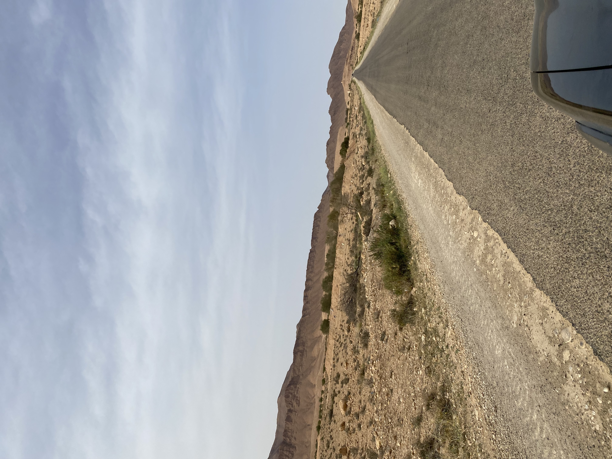
Roadside landscape at Bel Khir showing mature Acacia raddiana trees—the iconic umbrella thorn acacia of savannah ecosystems. This location represents one of the last remaining populations of this species in Tunisia.
The journey begins where two worlds meet. At Bel Khir, the Mediterranean gradually surrenders to the Sahara, marked by stands of Acacia raddiana—the umbrella thorn acacia that defines this ecological threshold.
These trees are not merely landscape features. They are indicators of a transition zone, a gradient of increasing aridity where each kilometer south brings measurable changes in temperature, rainfall, and the biological communities that can persist.
Sparse vegetation and compacted soil reflect grazing pressure and climate stress. What remains here represents resilience—acacia populations clinging to a landscape in flux, their preservation critical to understanding how ecosystems adapt to environmental change.
Underground Architecture
Old Matmata · 33°32'30"N 9°58'23"E
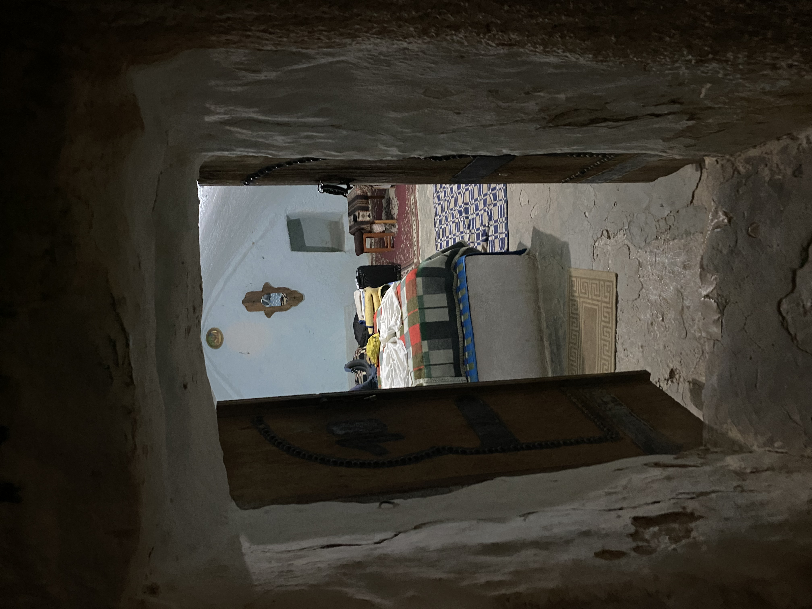
Interior of traditional troglodyte dwelling carved into soft sedimentary rock. Whitewashed walls and arched doorways demonstrate vernacular subterranean architecture adapted to extreme temperature fluctuations.

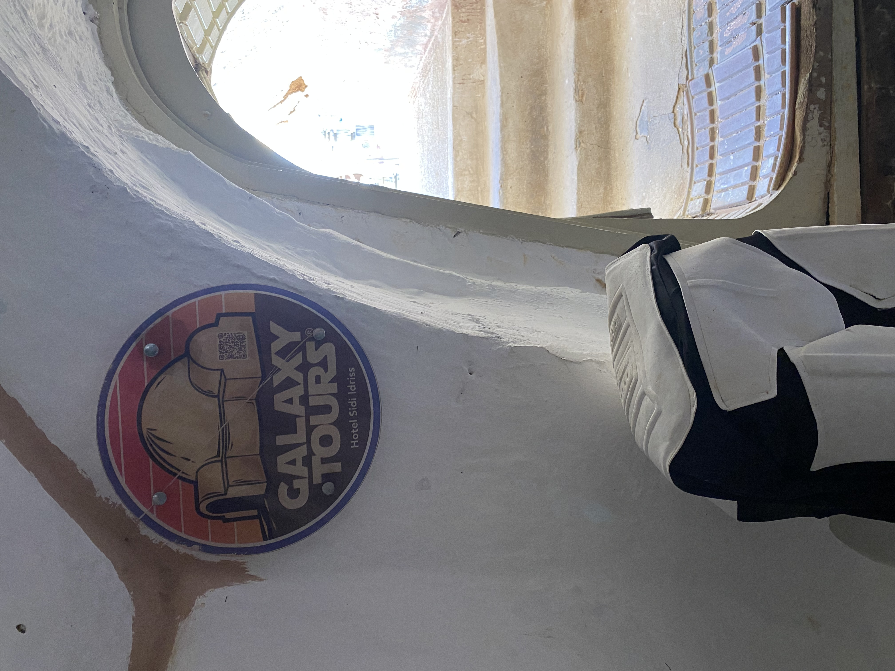


At Old Matmata, human adaptation to desert extremes takes architectural form. The Berber community here carved homes directly into hillsides—not as novelty, but as necessity.
Underground dwellings maintain stable temperatures year-round, a passive thermal regulation system where ambient conditions can exceed 45°C in summer. The architecture is sustainable by design, requiring no external energy inputs for climate control.
Yet these spaces now inhabit a dual identity. The circular Galaxy Tours sticker marks where Luke Skywalker's homestead stood in the 1977 Star Wars film. Film tourism infrastructure overlays cultural heritage, creating economic opportunities while raising questions about authenticity and commodification.
As we descended into courtyards ringed with hand-carved niches and colorful textiles, the question persisted: can vernacular knowledge systems survive their transformation into spectacle?
Walking tour through the Star Wars museum at Old Matmata, showing the integration of film history with traditional Berber architecture.
The Transit Zone
Observations Along the Route
Between cultural landmarks lie the ordinary kilometers—the transit zones that most narratives skip. But landscapes in motion reveal patterns invisible from static observation points.
Kef el Boum (Owl Cliff)
33°23'09"N 10°01'47"E
Roadside raptor perched on utility pole near Kef el Boum, demonstrating how human infrastructure creates novel hunting perches in open desert terrain.
Place names encode ecological knowledge. "Kef el Boum"—Owl Cliff—announces a relationship between topography and avifauna that predates roads and power lines.
When we spotted a raptor perched on a roadside utility pole, it confirmed what toponymy already suggested: this corridor serves as hunting ground. Infrastructure creates novel vantage points, but the prey base—rodents, lizards, insects—existed long before asphalt.
Techine Settlement
33°28'37"N 10°00'07"E
Village landscape at Techine, showing human settlement patterns in the arid transition zone.
Small settlements like Techine punctuate the route south. Each represents a calculation: where can humans persist given available water, arable land, and connection to larger networks?
These are not oases in the classical sense, but nodes in a human geography shaped by constraint. As aridity increases, settlement density decreases—a gradient as predictable as the vegetation zones we crossed.
Road to Douz
33°00'53"N 9°42'52"E
Motorcycles on the road to Douz, highlighting recreation pressures in landscapes marketed as Rally Dakar heritage routes.
The road to Douz carries multiple narratives. For decades, it served as a Rally Dakar route—a landscape consumed as motorsport infrastructure, branded as "adventure" and "wilderness conquest."
Today, recreational ATVs and motorcycles continue the pattern. Each pass compacts soil, fragments habitat, and adds noise to an acoustic environment we were attempting to document.
The irony was not lost: we traveled this same road to study biodiversity in a system increasingly shaped by the very access that enables such study.
The Acoustic Hotspot
Part 1: The Oasis
Qsar Ghilen · ~32°59'N 9°38'E
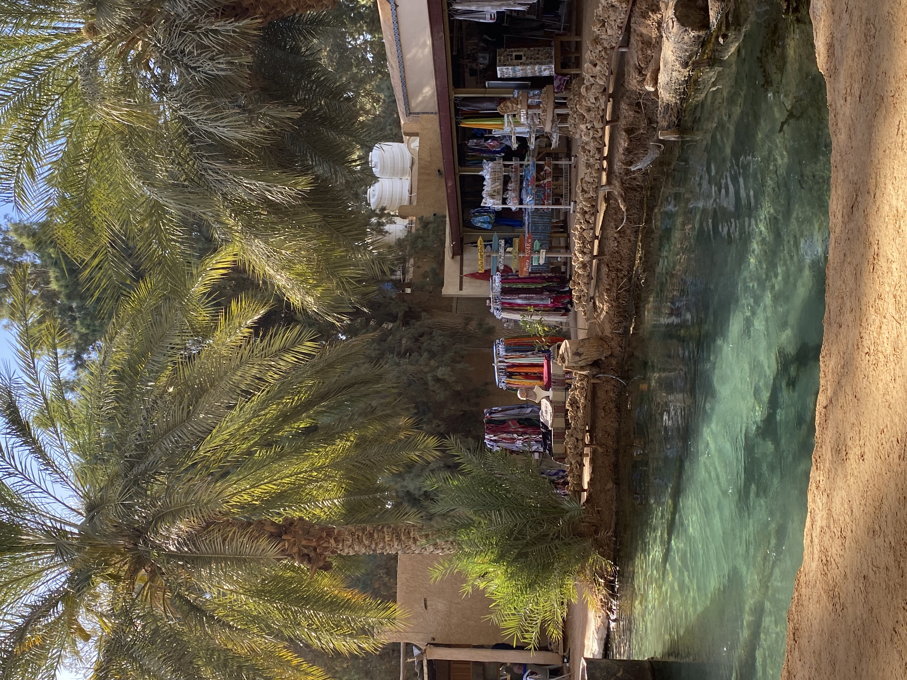
The Qsar Ghilen oasis showing permanent water body surrounded by Phoenix dactylifera (date palms). This water source creates a critical biodiversity refuge, concentrating avian activity.
At Qsar Ghilen, the desert speaks loudest. Not because the landscape amplifies sound, but because water concentrates life.
The oasis functions as a biodiversity hotspot—a concept ecologists use to describe areas with disproportionately high species richness relative to surrounding terrain. Here, permanent water creates a sharp ecotone between irrigated vegetation and bare sand, an edge habitat exploited by diverse taxa.
Over 17 hours of acoustic monitoring, we recorded 1,210 detections across 29 species. Spanish Sparrows dominated (384 detections), but the assemblage included migrants, residents, and opportunistic visitors—each using the oasis differently.
Egrets at water's edge, demonstrating how the oasis attracts wading birds to an otherwise arid landscape.
Ambient soundscape of the oasis—rustling palms, distant bird calls, and the subtle acoustics of water.
Breeding doves at the oasis, part of the resident avian community sustained by reliable water and food resources.
The Acoustic Hotspot
Part 2: The Acoustic Grid
Passive acoustic monitoring inverts traditional field ornithology. Instead of observer presence biasing what gets recorded, autonomous units document soundscapes continuously, capturing nocturnal species, cryptic calls, and temporal patterns invisible to point counts.
We deployed AudioMoth recorders across the Qsar Ghilen landscape, secured to acacia trees at approximately 2.5 meters height—a compromise between detection range and wind interference.
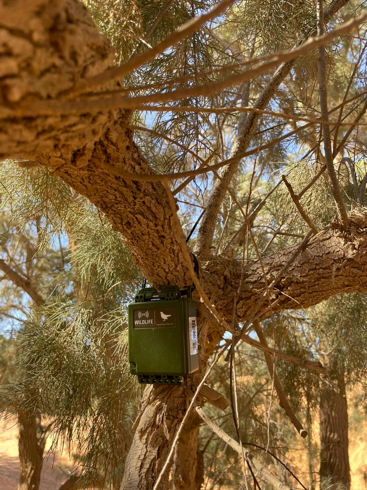
AudioMoth installation on Acacia raddiana

Field deployment configuration

Weatherproof housing detail

Monitoring station in landscape context
Audio files were analyzed using BirdNET, a deep-learning model trained on millions of bird vocalizations. The system outputs species identifications with confidence scores—a probabilistic approach that acknowledges uncertainty while enabling large-scale pattern detection.
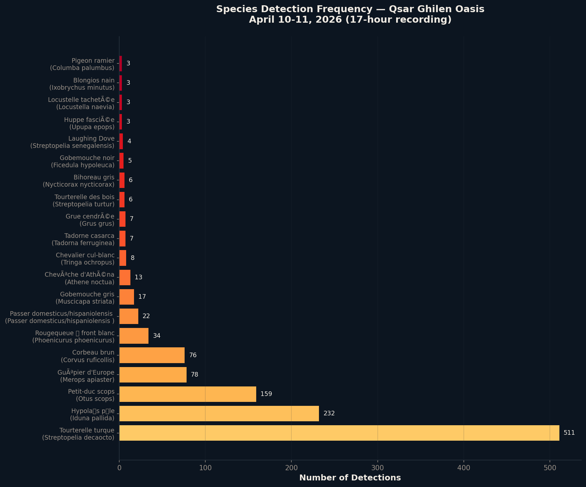
Top 20 species by detection frequency. Spanish Sparrow dominated with 384 detections, followed by House Sparrow (173) and Common Bulbul (91). Long-tailed species indicate diverse niche partitioning within the oasis ecosystem.
Diel activity patterns. Peak detection hours occurred at dawn (05:00-07:00) and dusk (17:00-19:00), classic patterns for desert bird communities avoiding midday heat stress.
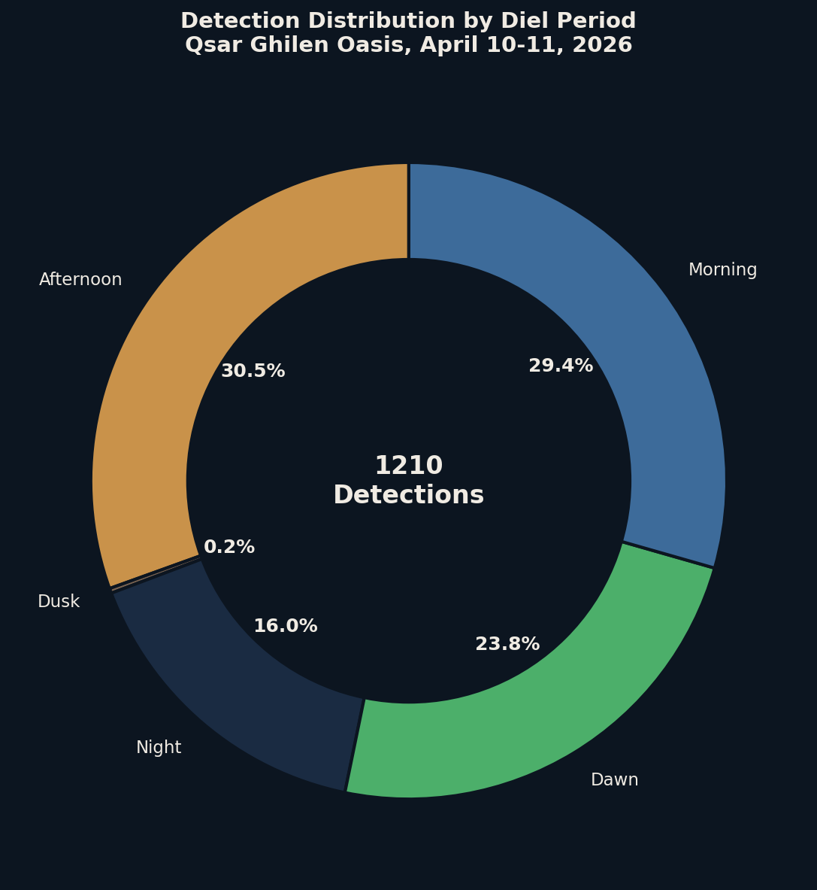
Diel activity breakdown. Individual species show distinct temporal niches, with some concentrated in dawn/dusk hours while others maintain activity throughout the day.
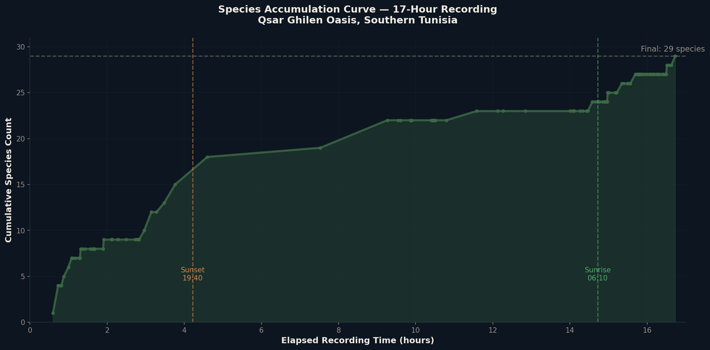
Species accumulation curve. The curve approaches asymptote, suggesting our 17-hour survey captured most of the readily detectable species using this oasis ecosystem.
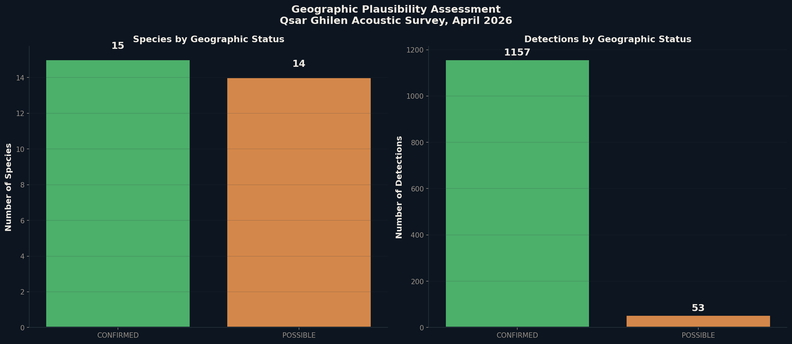
Geographic status breakdown. The assemblage includes both CONFIRMED (19 species with ≥3 detections) and POSSIBLE (10 species with 1-2 detections) records, reflecting a mix of residents, migrants, and vagrants using the oasis.
The Acoustic Hotspot
Part 3: The Sand Dunes
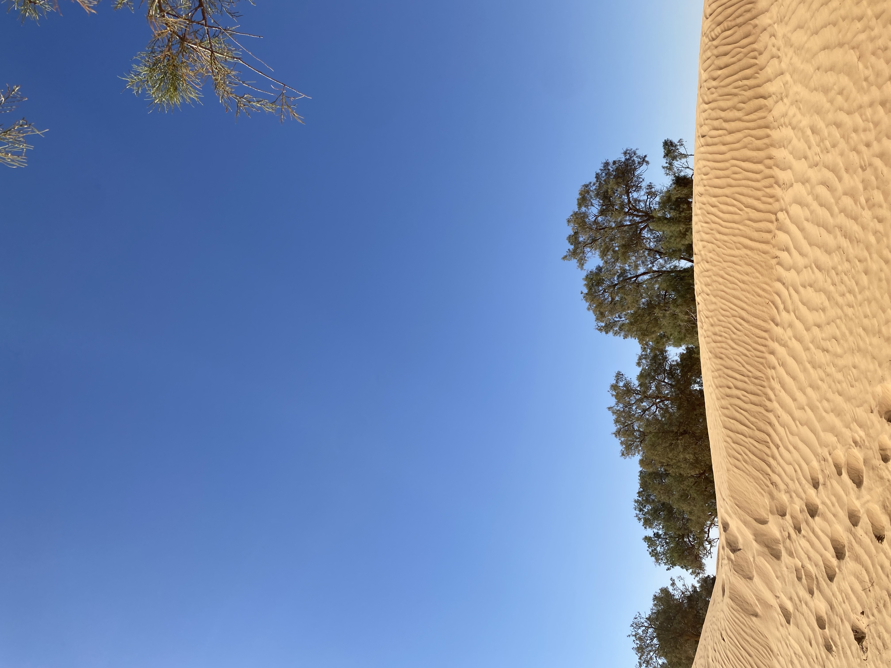
Wind-sculpted sand dunes displaying well-developed ripple patterns characteristic of aeolian geomorphology in the Grand Erg Oriental. Golden ochre sand shows fine-grain texture typical of quartz-dominated desert sediments.
Beyond the oasis, dune fields stretch toward the Grand Erg Oriental—vast sand seas where wind, not water, shapes the terrain. Yet even here, life persists.
Nocturnal arthropod surveys using UV light traps revealed unexpected diversity: weevils, hawk moths, mantids, and longhorn beetles. These are not incidental species—they form the trophic foundation that sustains insectivorous birds, bats, and reptiles detected in our acoustic and visual surveys.
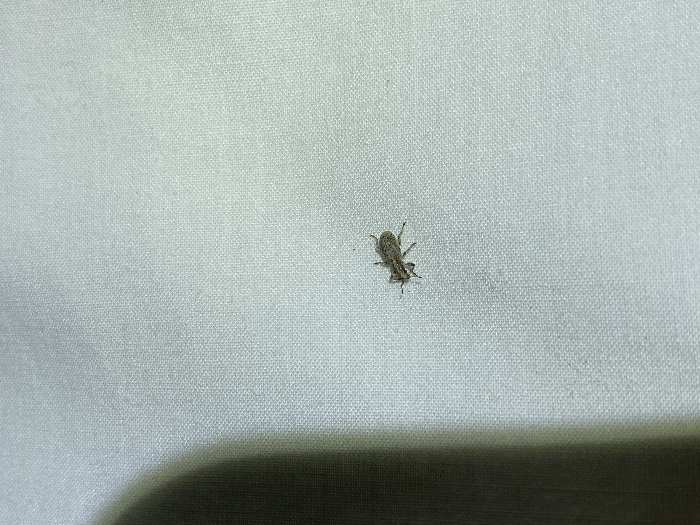
Curculionidae (weevil) attracted to UV light trap
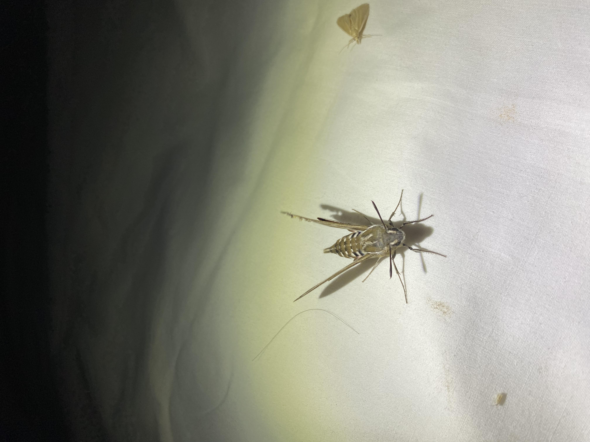
Sphingidae (hawk moths)—nocturnal pollinators

Mantodea predator

UV light trap configuration
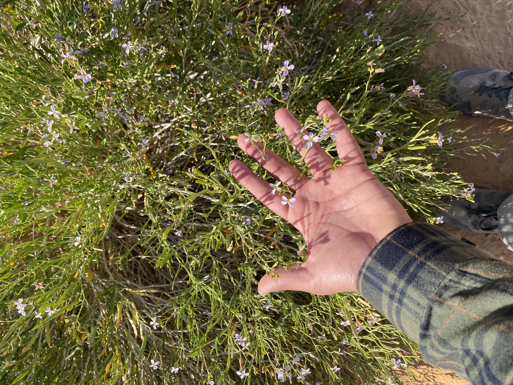
Ephemeral flowering shrub

Diverse arthropod assemblage
Longhorn beetle (Cerambycidae) locomotion—high-resolution documentation of desert arthropod behavior.
Slow-motion moth flight mechanics, revealing aerodynamic adaptations for desert wind conditions.
The dunes are not sterile. They are dynamic systems where flowering plants respond to ephemeral rainfall, insects emerge on predictable phenological schedules, and higher trophic levels track these pulses of productivity.
Understanding these connections—from sand ripples to hawk moths to nightjar calls—requires looking beyond single taxa and seeing ecosystems as integrated webs of energy flow and evolutionary adaptation.
The Acoustic Hotspot
Part 4: The Community

Researcher with Am Ali, local guide whose traditional ecological knowledge shaped site selection and interpretation throughout the survey.
No research happens in isolation. At Qsar Ghilen, Am Ali—a local guide with decades of desert experience—became collaborator, translator, and interpreter of landscape patterns we might otherwise have missed.
Traditional ecological knowledge operates on different timescales than acoustic surveys. Where our recorders captured 17 hours, Am Ali carried knowledge of seasonal rhythms, historical abundances, and behavioral patterns accumulated over a lifetime of observation.
He identified bird calls we couldn't name, pointed out caracal tracks near archaeological ruins, and explained why date palm irrigation systems created the edge habitat that concentrated species. His knowledge didn't compete with our scientific methods—it enriched them.
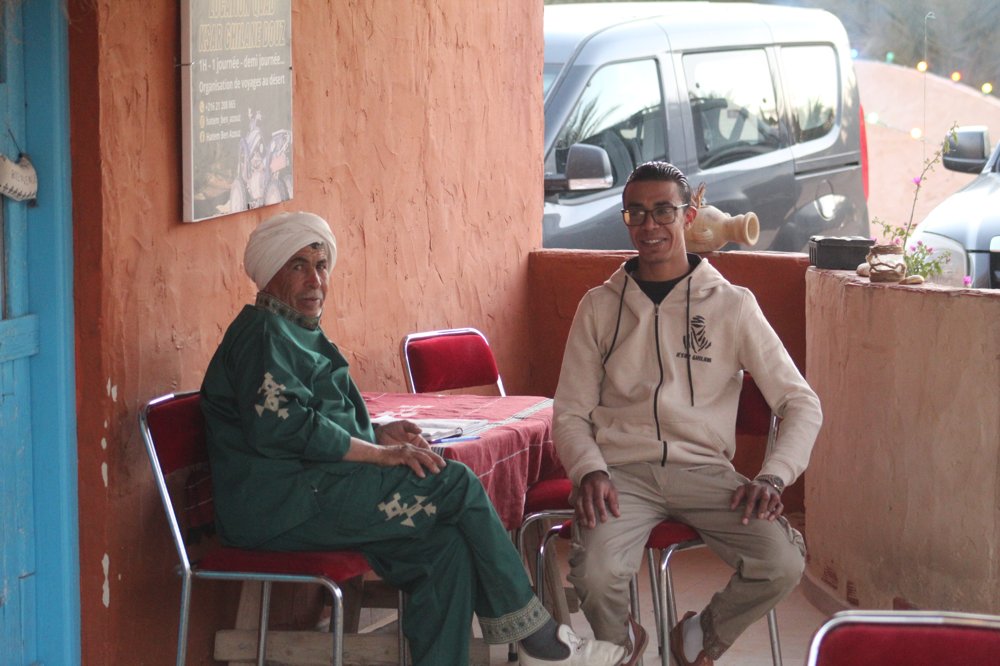
Am Ali, whose guidance was essential to navigating both physical terrain and cultural context of the Qsar Ghilen landscape.
Preparation of mella, traditional desert bread cooked in sand—a demonstration of culinary practices adapted to resource-limited environments.
Community engagement isn't just ethical practice—it's methodological necessity. Research conducted without local knowledge risks misinterpreting patterns, overlooking context, and producing conclusions disconnected from lived reality.
At Qsar Ghilen, every data point existed within networks of human use, cultural meaning, and economic pressure that shaped what biodiversity could persist and where.
The Acoustic Hotspot
Part 5: The Archaeology

Latin inscription at Qsar Ghilen archaeological site, evidence of Roman-period settlement sustained by the same oasis water sources that support contemporary biodiversity.
The Roman ruins at Qsar Ghilen tell a story of continuity. For millennia, this oasis has functioned as a node where water enables persistence—first for date cultivation and trade routes, now for biodiversity refugia.
Archaeological stone walls now serve as perches for Desert Sparrows, microhabitat in a landscape where vertical structure is limiting. Ancient architecture becomes contemporary ecology, repurposed by species that care nothing for historical designation.
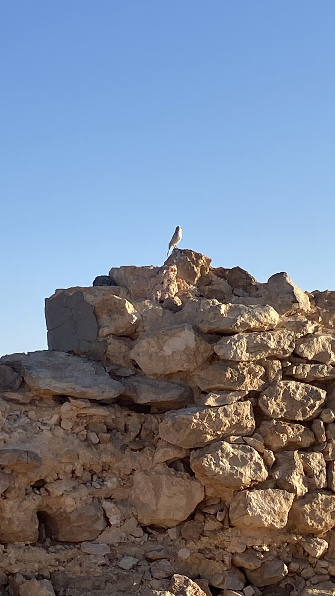
Passer simplex (Desert Sparrow) perched atop Roman-period stone wall, demonstrating how cultural heritage structures provide critical microhabitat in sparsely vegetated desert landscapes.
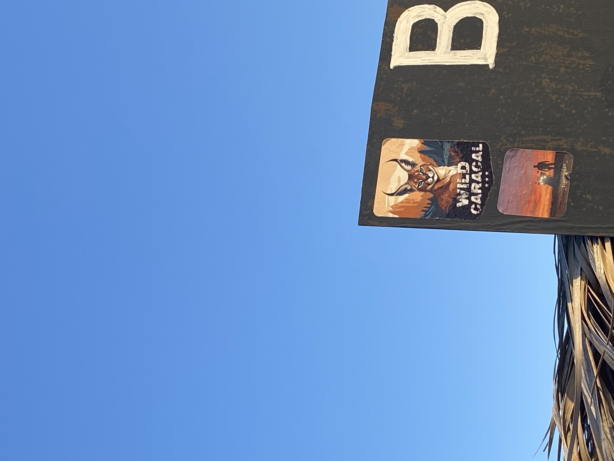
Interpretive signage featuring caracal illustration, integrating biodiversity awareness into cultural heritage interpretation.
The caracal signage points toward future possibilities. This medium-sized felid—absent from our acoustic surveys but present in regional folklore and track observations—represents a conservation target for expanded monitoring.
Camera traps could document caracal presence. Acoustic arrays could detect their vocalizations. The infrastructure for biodiversity documentation already exists; what remains is commitment to long-term data collection that transcends single expeditions.
If Roman settlements persisted here for centuries, surely we can sustain monitoring programs for decades.
The Return Journey
Landscape Connectivity
The journey north reversed our southward trajectory, but the landscape revealed different patterns in opposite light. What we saw at midday going south, we encountered at dusk returning—temporal variation that reminded us how incomplete any single observation must be.
Chott El Fejej (Salt Lake)
33°59'46"N 9°07'55"E
Ephemeral wetland at Chott El Fejej, demonstrating seasonal water availability that supports migratory bird stopovers.
Chott El Fejej—a seasonal salt lake—appeared as we drove north. In wet years, this endorheic basin fills with water, creating temporary wetland habitat critical for migratory waterfowl.
But seasonality introduces uncertainty. Species compositions shift with water availability. Acoustic surveys conducted in April might miss entire guilds present in November. What appears as "biodiversity" is actually a snapshot of dynamic processes unfolding across scales our methods can barely capture.
Conservation Challenges
Quad/ATV tracks across fragile desert habitat, illustrating recreation pressures that fragment ecosystems and introduce noise pollution to areas targeted for acoustic monitoring.
The tire tracks were unmistakable. ATVs and motorcycles had carved routes across dune systems, compacting sand and crushing vegetation that takes years to regenerate in this water-limited environment.
Recreation impacts present a conservation paradox. Ecotourism can generate economic value that justifies habitat protection—but unregulated access degrades the very landscapes marketed as "pristine wilderness."
Acoustic monitoring itself isn't immune to these tensions. Our presence required vehicle access, gear transport, and human disturbance. We documented soundscapes while contributing to the noise.
Sustainable approaches require managing these trade-offs explicitly: designated routes to minimize fragmentation, seasonal closures during breeding periods, and monitoring protocols that acknowledge their own ecological footprint.
What the Desert Says
The desert speaks—if we bother to listen.
Over two days and 1,000 kilometers, we moved through landscapes often dismissed as barren. Yet our recorders documented 29 species across 1,210 detections. Spanish Sparrows, House Sparrows, Common Bulbuls, Woodchat Shrikes, Desert Larks—each using the oasis in distinct ways, each contributing to an acoustic signature that refutes the "empty desert" narrative.
The data visualizations tell part of the story: diel activity peaks at dawn and dusk, confidence scores averaging 0.777, a mix of CONFIRMED residents and POSSIBLE vagrants. But numbers alone can't capture the complexity of what we encountered.
Final assemblage composition: 19 CONFIRMED species (≥3 detections) and 10 POSSIBLE species (1-2 detections), reflecting diverse habitat use patterns across the oasis ecosystem.
What matters more than the species count is the recognition that biodiversity persists in systems actively shaped by human pressure—agriculture, recreation, infrastructure, climate change. Oases like Qsar Ghilen exist at the intersection of ecological and social systems.
The archaeological ruins remind us that people have sustained livelihoods here for millennia. Am Ali's traditional knowledge demonstrates continuity of ecological engagement. The caracal signage points toward conservation futures that integrate cultural heritage and biodiversity goals.
But the ATV tracks and Rally Dakar history remind us that landscapes are contested. Every use—research, tourism, agriculture, recreation—imposes costs. Sustainability requires acknowledging these trade-offs and managing them transparently.
Acoustic monitoring can't solve these tensions. But it can reveal patterns invisible to casual observation, document baselines against which future change can be measured, and provide evidence for conservation arguments grounded in empirical data rather than assumptions.
The desert speaks. What we do with what it says remains an open question.